In the short term, exponential smoothing models can be great at forecasting one-step ahead. For seasonal models, the one-step ahead is a whole season ahead.
1.2 Stationarity
Stationary means that any time could be the mean. Eventually our data converges to a mean.
We need consistency of mean and variance. If there are significant changes in mean (trending) or seasonality then the data is NOT stationary.
1.3 ARIMA Models
AR is forecasting a series based on the past values in the series–called lags. With AR terms, the actual past observations inform the prediction in the next time period.
MA is forecasting a series based solely on past errors–called error lags. With MA terms, the mistake you made in the last observation informs what your prediction is in the next time period.
Typically, we write ARIMA as:
\[
\text{ARIMA}(p, d, q)
\]
\(p\) is the number of AR terms
\(d\) is the number of first differences
\(q\) is the number of MA terms
1.4 Seasonality
There is no formal test for seasonality. You have to plot your overall data to see if you believe seasonality exists.
To decide how large our test set should be, we use the length of forecast we are interested in. In this case, we are interested in the next year forecast so the length of test will be 12 months.
Seasonality is the component of time series that reprsents the effects of seasonal variation. However, just because you have something that repeats every year (e.g. chocolate sales in February) does not mean that it is seasonal. A seasonal period (\(S\)) is the length of time that the season occurs. For monthly data, \(S = 12\).
Seasonal data means that no matter where you are in a season, that seasonal wave will repeat itself.
By defiinition, seasonal data is not stationary. Mathematically, stationarity is if you take any window of time to your data, the average stays the same. See Figure 1 for an example.
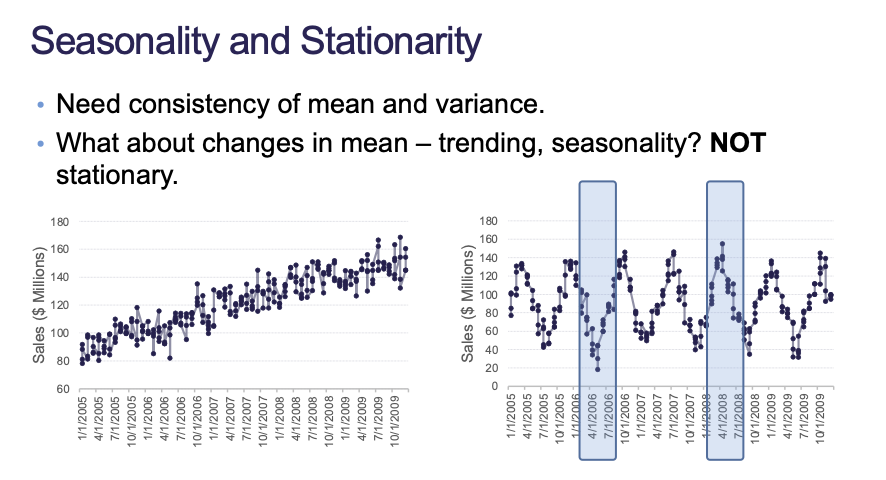
Figure 1: Seasonality is Not Stationary
4 Seasonal ARIMA Models
Similar to trend, seasonality can be solved with deterministic or stochastic solutions.
Deterministic uses seasonal dummy variables, Fourier transforms, and predictor variables. Stochastic uses seasonal differences. We always have to make our data stationary first before modeling.
5 Seasonal Unit-Root Testing
We can perform the Canova-Hansen test to evaluate whether a unit root exists for seasonal data.
\(H_0\): Deterministic Seasonality (Differencing will not help)
No good formal tests for seasons beyond 24 time periods. Frequency is only a notion of how many times the data should “repeat” itself. Every time we take a difference we essentially create a whole new distribution. Taking one difference and taking one difference of up to 12 lags are not similar.
If we face this situation, then we should try both paths and see which model predicts better.
cbind("Airlines Passengers"= train, "Annual change in Passengers"=diff(train, 12)) %>%autoplot(facets =TRUE) +labs(x ="Time", y ="") +ggtitle("Comparison of Difference Data to Original")
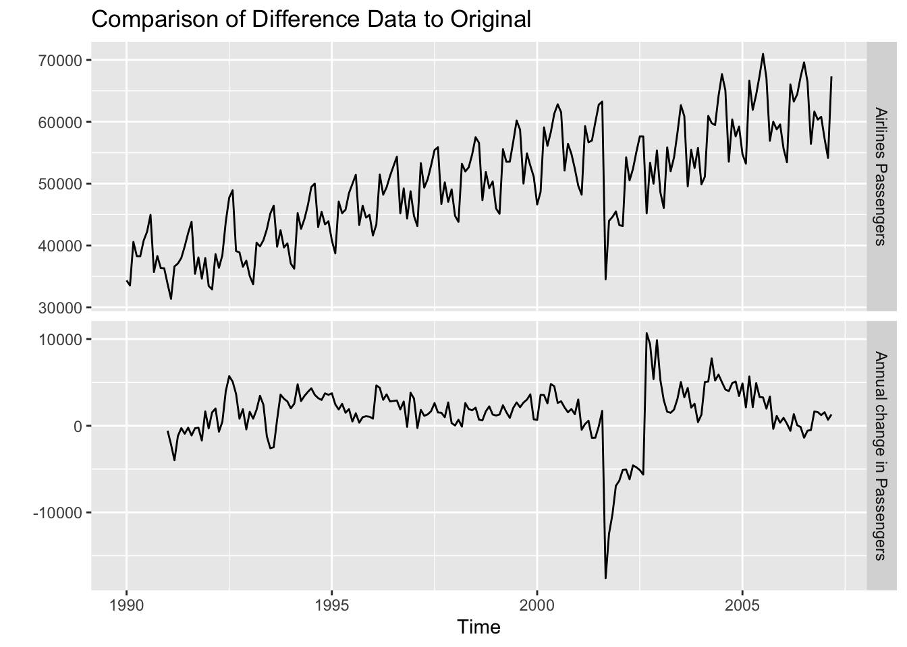
This result tells us that we should take one seasonal difference. After we take our seasonal difference (12 lags) then we need to check for regular differences afterwards.
Code
train %>%diff(lag =12) %>%ndiffs()
[1] 0
This result tells us that we should take 0 regular differences after taking the seasonal difference. No trend, no seasonality, so we believe our data is now stationary.
6 Deterministic Solutions
6.1 Seasonal Dummy Variables
For a time series with \(S\) periods within a season, there will be S - 1 dummy variables, one for each period (and one accounted for with the intercept).
We can model with a deterministic solution by supplying a model matrix of our dummy-encoded months. seasonal = FALSE because we are trying to account for seasonality manually with our deterministic approach.
Series: train
Regression with ARIMA(1,1,1) errors
Coefficients:
ar1 ma1 drift M1 M2 M3 M4
0.4291 -0.7971 120.7017 -3947.9999 -5040.3341 4372.9579 1776.4469
s.e. 0.1142 0.0772 47.0804 485.1759 583.2678 625.8855 653.3705
M5 M6 M7 M8 M9 M10
2774.4117 5538.2230 8074.3636 7745.4694 -2914.0941 1275.6541
s.e. 664.7051 667.9359 665.0342 655.1107 633.9315 589.7377
M11
-1168.3771
s.e. 486.9793
sigma^2 = 3751113: log likelihood = -1844.41
AIC=3718.82 AICc=3721.34 BIC=3768.74
Training set error measures:
ME RMSE MAE MPE MAPE MASE
Training set -13.57427 1865.286 1119.092 -0.1821873 2.399031 0.4156612
ACF1
Training set -0.002821366
The auto.arima function built a linear regression and then an ARIMA(1, 1, 1) on the residuals from the linear regression.
6.1.2 Advantages and Disadvantages
Advantages:
Interpretability on the effects of different parts of the season
Straight forward to implement
Disadvantages:
Especially long or complex seasons are hard to deal with
More than 24 periods in a season is computationally burdensome
Some seasons are complex (365.25 days in a year, 52.17 weeks in a year)
Seasonal effects remain constant
6.2 Fourier Transforms
Fourier showed that series of sine and cosine terms of the right frequencies approximate periodic series.
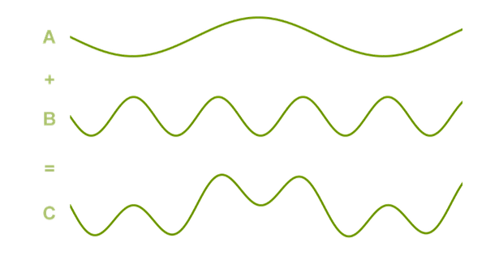
Figure 2: Periodic Series
The idea is that we add Fourier variables to a regression model predicting the target to remove the seasonal pattern.
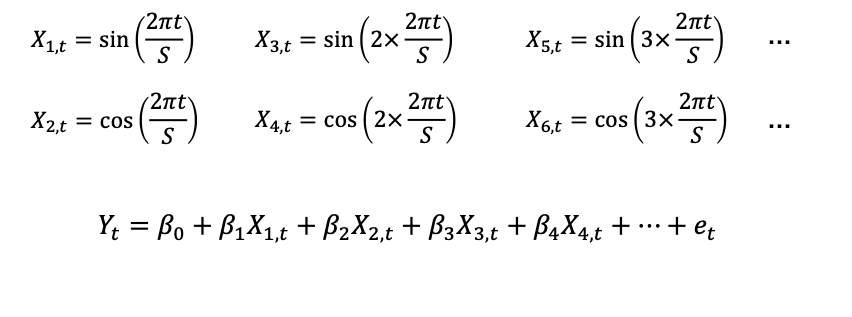
Figure 3: Fourier Variables
In Figure 3, \(S\) is the frequency or length of the season. The multiplier refers to how many times we want the curves to repeat per season. We are going to continue adding pairs of cosine and sine terms until we have one half of a season. With odd-number frequencies, we go up to \(\text{floor}(\frac{S}{2})\) terms.
If you add the same number of Fourier variables as you have seasonal dummy variables, you will get the same predictions. However, typically do not need all the Fourier variables, especially with large values of \(S\).
plots <-list()for (i inseq(6)) { fit <-auto.arima(train,xreg =fourier(train, K = i),seasonal =FALSE, lambda =NULL ) plots[[i]] <-autoplot(forecast(fit, xreg =fourier(train, K = i, h =12))) +xlab(paste("K=", i, " BIC=", round(fit[["bic"]], 2))) +ylab("") +ylim(30000, 80000)}gridExtra::grid.arrange( plots[[1]], plots[[2]], plots[[3]], plots[[4]], plots[[5]], plots[[6]],nrow =3)
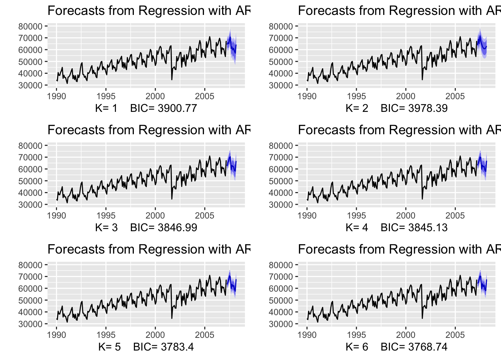
The \(K\) parameter controls how many pairs of Fourier terms we are adding. We can record the BIC values to see how many pairs of terms provides our best model. If the best number of pairs is \(\frac{S}{2}\), then one term in the last pair will be left out which is the intercept.
6.2.1 Advantages and Disadvantages
Advantages:
Can handle long and complex seasonality
If multiple seasons, just add more Fourier variables to account for them
Disadvantages:
Trial and error for “right” amount of Fourier variables to use
No interpretable value
Effect of season remains constant
6.3 Predictor Variables for Seasonality
Last approach to account for seasonality in data is to use other predictor variables that have matching season.
Modeling these variables against the target might remove seasonality.
6.3.1 Advantages and Disadvantages
Advantages:
Can handle long and complex seasonality
If multiple seasons, just add more variables to account for them
Interpretation still holds
Can easily measure and interpret effects from these variables
Disadvantages:
Trial and error for “right” variables to use
Might not have predictor variables to use in this context
7 Modeling Residuals
After removing seasonality through deterministic approaches, the residuals are modeled with Seasonal ARIMA models. We still might need seasonal effects even though season is removed.
If you have data that you believe might show trend AND seasonality. You should address seasonality first as it might take care of trend. Addressing trend first will never address seasonality as well.
8 Stochastic Solution (Differencing)
With seasonal differences, you are taking the difference between some observation \(Y_t\) and the observation one season prior \(Y_{t-S}\).
After removing the seasonality through stochastic approaches, the remaining differences are modeled with Seasonal ARIMA models:
\[
Y_t - Y_{t-S} = \textcolor{red}{W_t}
\]
\(W_t\) is modeled with Seasonal ARIMA
Code
train %>%diff(lag =12) %>%ggtsdisplay()
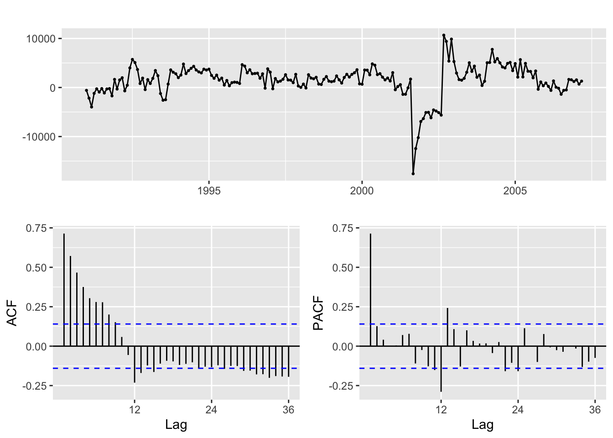
Our seasonal length, \(S\), is 12 so we take a difference with lag = 12. In practice, we want at least 3 seasons in our data because differencing completely removes the first season.
8.1 Limitations
Hard to evaluate stochastic effects for long and complex seasons. Most statistical tests cannot evaluate seasons past 12 or 24 time periods.
For long and complex seasons it’s best to approach them with deterministic solutions.
9 Seasonal ARIMA
\[
\text{ARIMA}(p, d, q)(P, D, Q)_S
\]
Seasonal ARIMA has an extra set of terms: \(P, D, Q\) and \(S\). \(S\) represents the length of the season so if we take any seasonal differences we are taking the difference between the current observations and the observations \(S\) time periods back. See Figure 4 for an example of a seasonal \(\text{ARIMA}(1, 0, 1)(2, 1, 0)_{12}\)
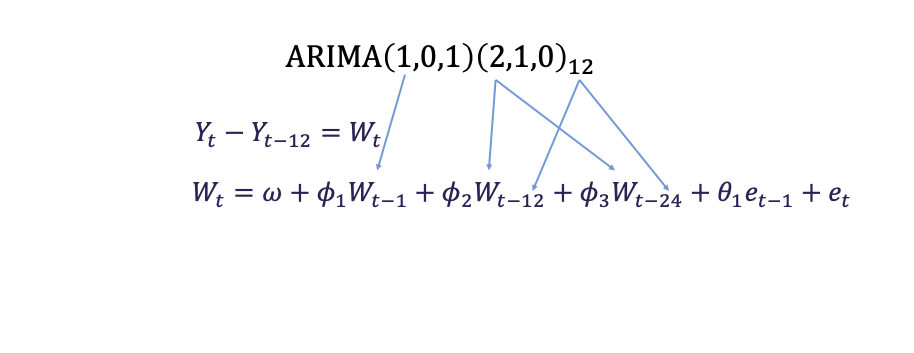
Figure 4: Seasonal ARIMA Example
Seasonal ARIMA models have the same structure and approach as regular ARIMA with AR and MA patterns in the PACF and ACF.
The pattern is on the seasonal lag instead of the individual lags.
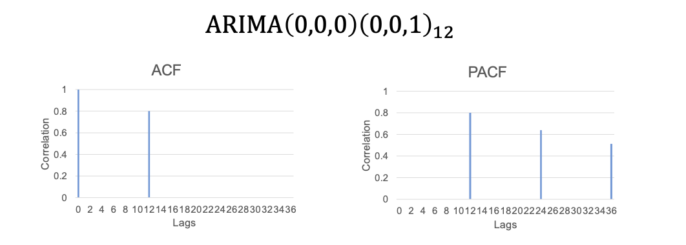
Figure 5: ARIMA(0, 0, 0)(0, 0, 1), S = 12 Plots
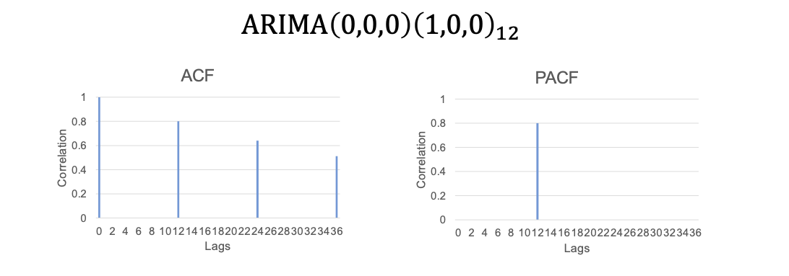
Figure 6: ARIMA(0, 0, 0)(1, 0, 0), S = 12 Plots
In order to determine P, D, Q terms, look for spikes at the \(S\) lag term. Figuring out p, d, q terms is the same as the regular ARIMA.
Note that in the Arima function, the length of seasonality is inferred from the ts object we supply to it.
Series: train
ARIMA(1,0,1)(0,1,1)[12] with drift
Coefficients:
ar1 ma1 sma1 drift
0.8800 -0.2962 -0.6785 124.9788
s.e. 0.0454 0.0950 0.0600 23.6330
sigma^2 = 3639517: log likelihood = -1751.67
AIC=3513.34 AICc=3513.66 BIC=3529.7
Training set error measures:
ME RMSE MAE MPE MAPE MASE ACF1
Training set -4.332616 1832.54 1055.07 -0.1745474 2.217472 0.3918815 0.01300462
Code
checkresiduals(s_arima)
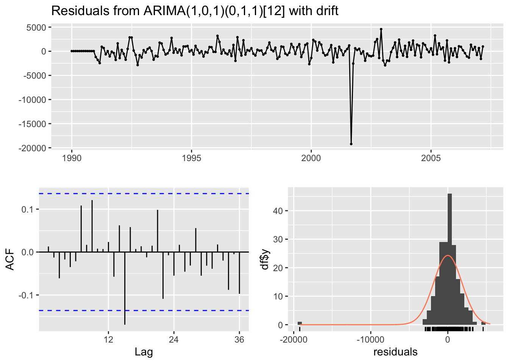
Ljung-Box test
data: Residuals from ARIMA(1,0,1)(0,1,1)[12] with drift
Q* = 21.957, df = 21, p-value = 0.402
Model df: 3. Total lags used: 24
9.1 Multiple Differences
Models can contain both unit roots and seasonal unit roots. After removing the seasonal unit root through differencing to get \(W_t\), ordinary differences can be calculated.
9.1.1 Limitations
Hard to evaluate stochastic effects for long and complex seasons
Most statistical tetss for stochastic vs. deterministic can not handle past 12 or 24 periods in season
For long / complex seasons, best to approach with deterministic solutions
10 Multiplicative vs. Additive
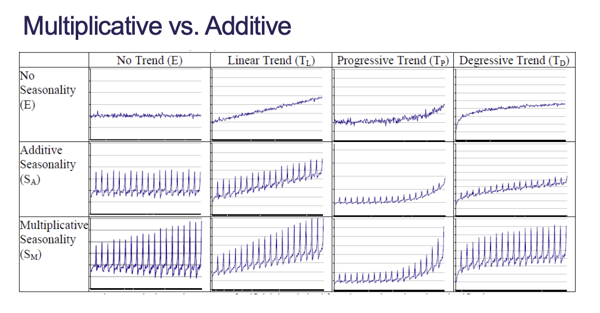
Figure 7: Multiplicative vs. Additive
10.1 Backshift Operator (B)
The backshift operator is the mathematical operator to convert observations to their lags:
What do the correlation plots look like for additive vs. multiplicative seasonality?
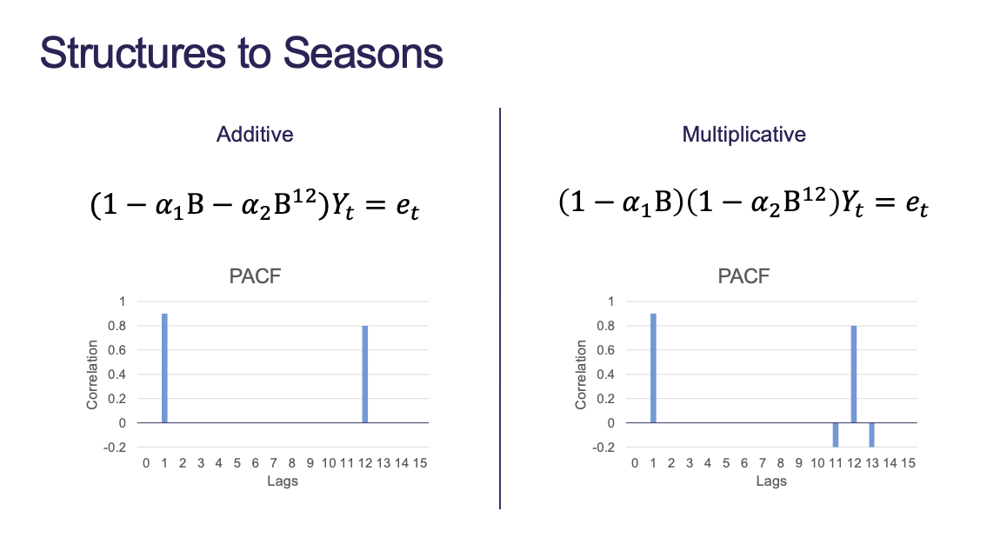
Figure 8: Multiplicative vs. Additive Correlation Plots
In Figure 8, we can see that for multiplicative seasonality there are spikes around the lag at \(S = 12\). It does not matter which directions the spikes are moving in, just as long as there are spikes adjacent to the seasonal lag.
By default, R assumes multiplicative seasonality. If you want to force additive, then you have to 0 out the seasonal terms and then manually assign all the lags you do want: